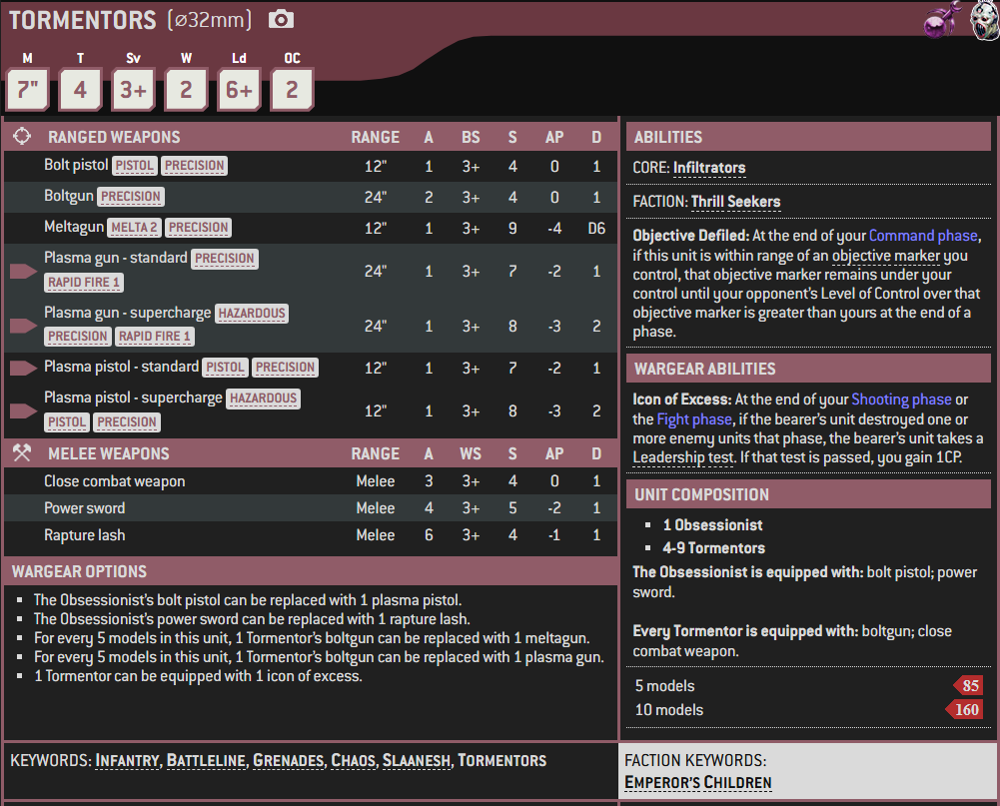

1 / 3

Miniature
2 / 3

Box Art
3 / 3

Artwork
Tormentors are Chaos Space Marines of the Emperor's Children Legion who are one of the two major formations found among that Traitor Legion's common Heretic Astartes alongside the Infractors. They are specialists in ranged combat.
Even the most common Chaos Space Marines among Fulgrim's Traitor Legion are masters of their own brand of warfare, and are often found collected into two distinct formations based on their tactical preferences. Tormentors opt for mastery in the field of ranged combat, prizing speed and aggression over the lumbering defences of their Loyalist nemeses. Their highly ornamented boltguns are supremely deadly in the hands of such skilled warriors, and even their endless hunt for ever greater battle sensations doesn't curb their usefulness as objective-capturing heavy infantry.
Tormentors are the grim mirrors of the Tactical Squads of the original Loyalist Emperor's Children Legion. Clad in corrupted Chaos Power Armour and armed with highly ornamented bolters, Tormentors are distinct from their Infractor cousins in that they specialise in ranged combat. Tormentors see themselves as embodying the noble ideal of true Space Marines -- that of one free from the stagnant dogma of the Loyalists -- but in truth they are little more than self-serving and egomaniacal reavers, like all the mortal servants of Slaanesh.
Known for their inflated sense of self-worth and ability, Tormentors only view strategies or battle plans as elegant when they revolve around their own participation. Squads of Tormentors sometimes assign themselves special missions amid combat, inventing tactical objectives to showcase their skills according to their own twisted whims and logic. At times, such objectives are even retroactively applied in order to justify their latest excesses.
